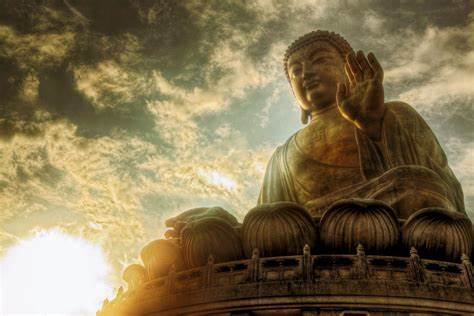
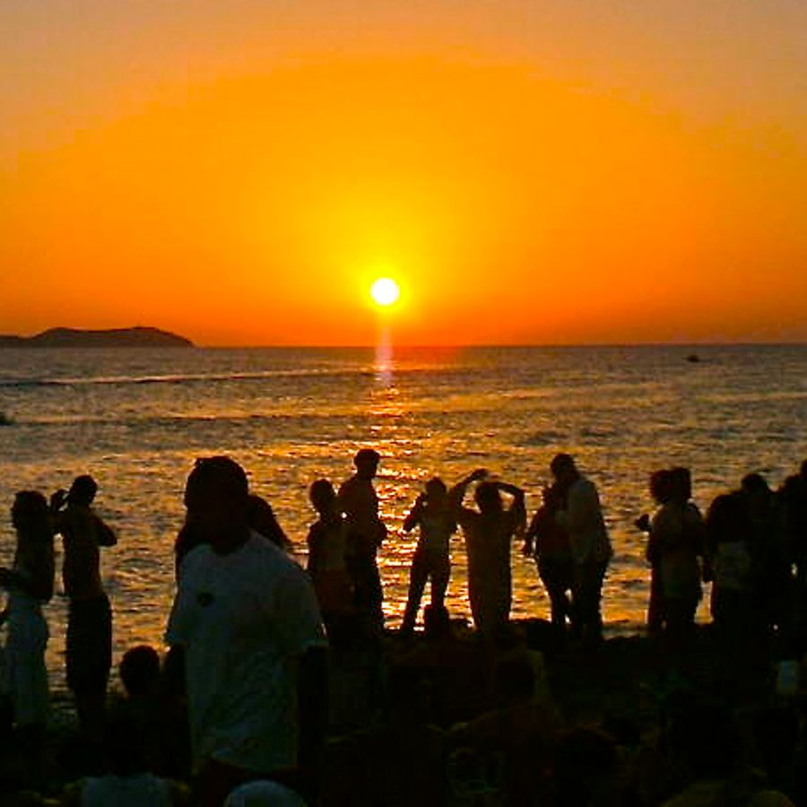
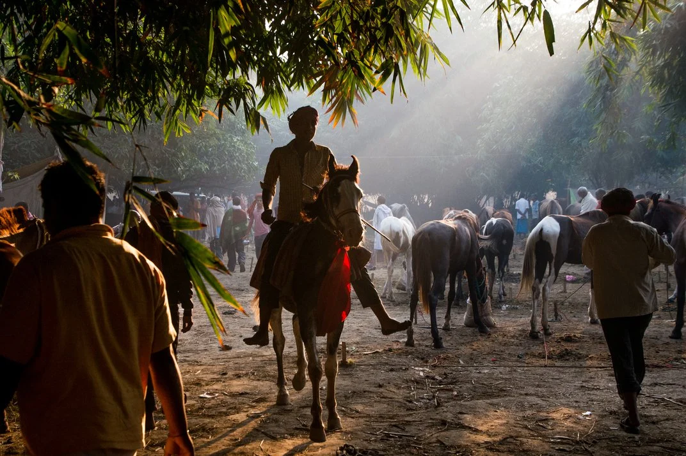

 The Buddha Jayanti is celebrated during the month of May, on the Baisakh Purnima (full moon day). It is believed that Buddha was born, enlightened and passed away on the same full moon day. Thus, the festival Buddha Jayanti came to be celebrated. This is especially celebrated in the town Bodh Gaya and Rajgir. This day marks the day of prayer and celebration at the Mahabodhi Temple.  This is probably the most famous festival of this State. When one hears Chatth Puja, Bihar instantly comes to the mind. This is an actually an ancient Hindu festival which is dedicated to the Sun God, Surya, and take place 6 days after Diwali. It is an expression of thanks giving and seeking blessings from the Almighty for sustaining life on Earth. During this festival, the person observing Chatth, also known as Parvati, observes a fast from dawn to dusk which concludes with sweets. This fast is followed by another fast for 36 hours till the final day, when puja starts at the river, before sunrise. You can witness thousands of devotees and the river during this time. Witnessing Chatth Puja will let you witness the devotion in its true sense.  This fair of Bihar has its root in ancient mythology and folklore. The Sonepur Cattle fair is the Asia’s largest cattle fair which takes place in the town of Sonepur in Bihar. It is held on Kartik Purnima that is the first full moon after the festival of Diwali. In this fair, domestic cattle like an elephant, camel, sheep and birds are brought in from around the country and sold here. Apart from this, varied handicrafts and handloom stalls are also put up, along with the magic show and folk dances. This fair attracts a large number of foreign tourists each year.